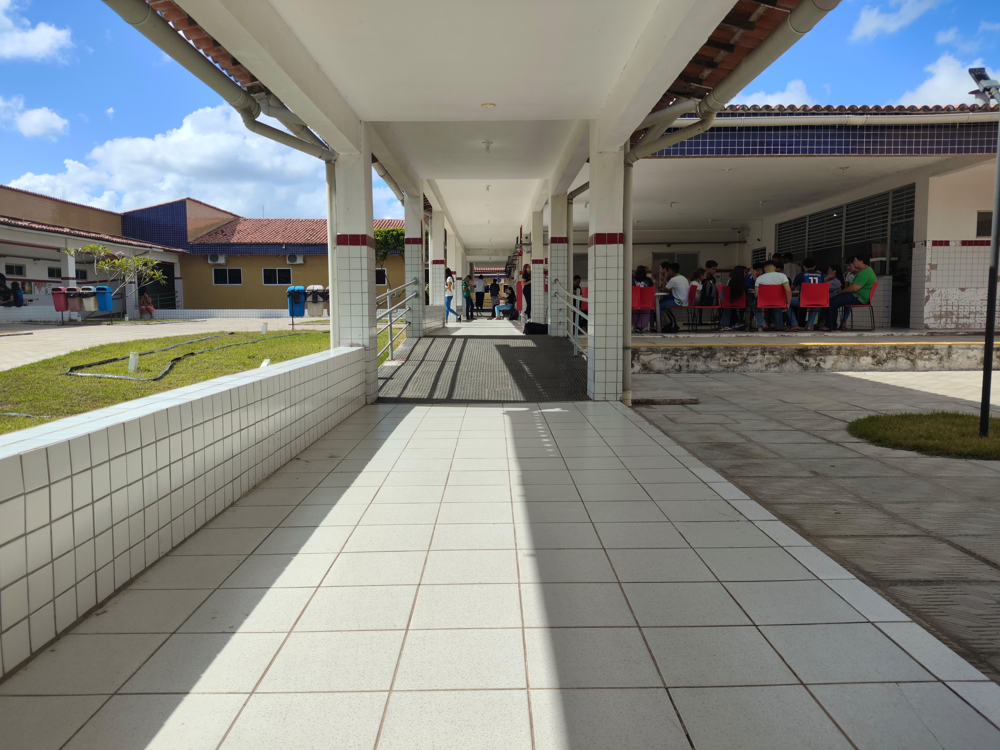

O IFRN João Câmara é uma instituição de ensino público que se destaca pela excelência na educação, ministrando cursos técnicos e superiores em diversas áreas do conhecimento. Com uma infraestrutura moderna, o campus oferece aos alunos um ambiente de aprendizagem ideal, com salas de aula bem equipadas e laboratórios especializados. Além disso, o IFRN João Câmara incentiva o desenvolvimento de projetos de pesquisa e extensão, promovendo a inovação e o impacto positivo na comunidade. A instituição é um verdadeiro espaço de transformação, capacitando seus estudantes para desafios acadêmicos e profissionais.

Laboratórios e Salas
O campus dispõe de salas de aula equipadas com tecnologias de ponta e diversos laboratórios especializados, como os de informática, química, física e biologia, permitindo que os alunos realizem atividades práticas e experimentos em um ambiente ideal para o aprendizado.
Além da formação acadêmica, o IFRN João Câmara incentiva a participação em projetos de extensão e pesquisa, que conectam os alunos com a comunidade e promovem o desenvolvimento de soluções inovadoras.
O IFRN João Câmara oferece uma formação de qualidade com cursos técnicos e superiores universitários para as necessidades do mercado de trabalho e o desenvolvimento de habilidades essenciais para o futuro. Entre os cursos técnicos integrados , estão o de Informática , onde os alunos aprendem sobre programação, redes e suporte técnico; o de Eletrotécnica , com foco em sistemas elétricos, eletrônicos e automáticos; e o de Administração , que prepara os estudantes para atuar na gestão de empresas, marketing, finanças e recursos humanos. Para quem busca um ensino superior, o campus oferece o curso de Física , com ênfase em pesquisa e aplicação de conceitos físicos, e o curso de Energia , voltado para a produção e gestão de fontes de energia, incluindo as renováveis e tecnologias sustentáveis. Esses cursos preparam os alunos com uma base sólida teórica e prática, formando profissionais para os desafios do mercado.
.jpeg)